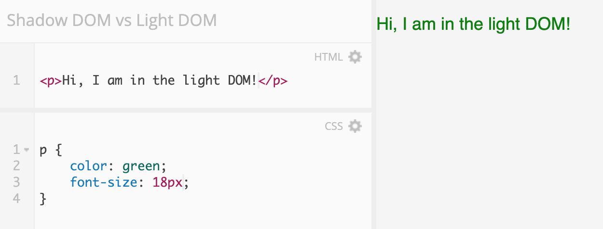

Hello!
I’m Robin Dykema.
I’m a UI engineer at Taulia in Austin, TX.
What we will cover today
- A background of the shadow DOM
- What is the shadow DOM?
- Shadow DOM examples
- How to use the shadow DOM
Background of the shadow DOM
The shadow DOM is part of the Web Component standards.
Web components are framework-agnostic components that can be dropped into any app. They use native JavaScript and do not require any outside libraries.
They're compatible with current and future frameworks.
Web components consist of four separate technologies that can be used together
- Custom elements
- Shadow DOM
- HTML templates
- ES Modules
You can use them together or separately.
Example use case for web components
Let's say we have a Vue repository and React repository, and we want the tooltips to look and act the same in both repositories.
Potential problems
- You have to coordinate between 2+ teams
- One team's tooltip looks/acts differently
- Your designer updates the look, and now you have to update it in two spots
Let's create a tooltip using web components!
We create the markup, logic, and styling once, and export it to be used in both repositories.
class Tooltip extends HTMLElement {
constructor() { ... }
connectedCallback() { ... }
_render() { ... }
disconnectedCallback() { ... }
attributeChangedCallback(name, oldValue, newValue) { ... }
_showTooltip() { ... }
_hideTooltip() { ... }
}
customElements.define("robins-tooltip", Tooltip);
...
My tooltip!
Web components are
- Reusable
- Future proof
- A way to help share code between React and Angular code bases
- Highly configurable
Web components are not
- A framework
- A rendering library
- Opinionated
- Going to replace React/Angular/Vue/____
Libraries of already built web components:
Browser support

Yes, you will need a polyfill if you want to support IE11.
You can write a component without using the shadow DOM and you can use the shadow DOM without writing a single component.
What is the shadow DOM?


The shadow DOM is not that scary, I promise.
Before we answer what the shadow DOM is... what is the DOM?
And the light DOM?
And the virtual DOM?
HOW MANY DOMS ARE THERE?!?

Shadow DOM ≠ the DOM.
Shadow DOM ≠ virtual DOM.
The DOM = the light DOM.
Types of DOMs
- The DOM / light DOM
- Virtual DOM
- Shadow DOM
The DOM (Document Object Model)
The DOM is also known as the light DOM when used in comparison to the shadow DOM.
Virtual DOM
 Source:
https://www.oreilly.com/library/view/learning-react-native/9781491929049/ch02.html
Source:
https://www.oreilly.com/library/view/learning-react-native/9781491929049/ch02.html
What is the shadow DOM?
The shadow DOM is a web API that lets you attach a hidden DOM element to a DOM element.
Encapsulation.
The shadow DOM is hidden from the rest of the DOM.
No CSS, markup, or logic can leak into the shadow DOM from the rest of the DOM.
Light DOM and Shadow DOM

Example use case for the shadow DOM
Remember the tooltip we created to share between our Vue and React repositories?
class Tooltip extends HTMLElement {
constructor() { ... }
connectedCallback() { ... }
_render() { ... }
disconnectedCallback() { ... }
attributeChangedCallback(name, oldValue, newValue) { ... }
_showTooltip() { ... }
_hideTooltip() { ... }
}
customElements.define("robins-tooltip", Tooltip);
Potential CSS problems
- The CSS is a mess in one repository and has leaked into the tooltip
- One repository uses a lot of outside libraries, and the CSS from those libraries has interfered with our tooltip styling
We can use the shadow DOM to make sure the tooltip is isolated from the rest of the code base.
No CSS or JavaScript from the other repositories can touch the tooltip. We will have all the control over how it acts and looks like.
Shadow DOM
The shadow DOM is like a DOM within the (light) DOM.
Without the (light) DOM, a shadow DOM cannot exist.
Think of it as a scoped subtree with its own elements and styles.
The shadow DOM nodes are completely isolated from the (light) DOM.
The shadow DOM simplifies CSS.
The shadow DOM simplifies CSS by letting you:
- use simple CSS selectors
div.main > div ~ #main ul li.selected > a[href*=”li-”] + span.lg {
background-color: white;
}
span {
background-color: white;
}
The shadow DOM simplifies CSS by letting you:
- use simple CSS selectors
- use more generic id/class names
The shadow DOM simplifies CSS by letting you:
- use simple CSS selectors
- use more generic id/class names
- not worry about naming conflicts
You can use Bootstrap and name a class "container"!
Shadow DOM examples
Several HTML elements you already use utilize the shadow DOM.
input type="range"
input type="range"

Dev tools -> settings -> show user agent shadow DOM
input type="range"
video
Shadow DOM vocabulary lesson
- Shadow host: The light DOM node that the shadow DOM is attached to
- Shadow tree: The DOM tree inside the shadow DOM
- Shadow boundary: The place where the shadow DOM ends, and the light DOM begins
- Shadow root: The root node of the shadow tree
Note: Multiple shadow DOMs can exist in the document, and can even be nested. But, each node can only host one shadow root.
Let's write some code!
Element.attachShadow
The Element.attachShadow() method attaches a shadow DOM tree to the specified element and returns a reference to its ShadowRoot.
Element.attachShadow
Regular HTML & CSS in light DOM
Add the shadow DOM using JavaScript
// Create shadow host (in light DOM)
const shadowHost = document.createElement('div');
// Create shadow root and attach to shadow host
const shadowRoot = shadowHost.attachShadow({ mode: 'open' });
shadowRoot.innerHTML = 'Hi, I am in the shadow DOM!
'
// Attach shadow host to the body
const container = document.querySelector('body');
container.appendChild(shadowHost);
Add in the shadow DOM
Inspect element
Add style to shadow DOM using JavaScript
// Create shadow host (in light DOM)
const shadowHost = document.createElement('div');
// Create shadow root and attach to shadow host
const shadowRoot = shadowHost.attachShadow({ mode: 'open' });
shadowRoot.innerHTML = 'Hi, I am in the shadow DOM!
'
// Attach shadow host to the body
const container = document.querySelector('body');
container.appendChild(shadowHost);
// Style the shadow DOM
const style = document.createElement('style');
style.textContent = `
p {
text-decoration: underline;
}
`
shadowRoot.appendChild(style)
Add style in the shadow DOM
Quiz!
What will this code return?
document.querySelectorAll('p').length => ???
Quiz!
What will this code return?
1
document.querySelectorAll('p').length => 1
A note on accessibility...
For those using assistive technologies to read web pages, the entire document (shadow and light DOM) is read as rendered, as one tree.
Final takeaways
- The shadow DOM is part of the web components specifications
- The shadow DOM
- Takeaway 3
Thanks!
Message me or find my slides (with additional resources) on Twitter at
@robindykema
Resources
- webcomponents.org
- Google web fundamentals: Web components
- Web Components the Right Way: A curated list of awesome web components resources
- ES modules: A cartoon deep dive
- MDN Docs: Introduction to the DOM
- MDN Docs: Using the shadow DOM